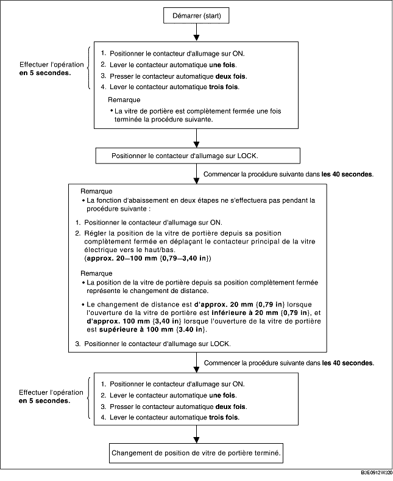

PROCÉDURE DE CHANGEMENT DE POSITION DE VITRE DE PORTIÈRE
B3E091266350W03
-
Remarque
-
• Après avoir effectué la procédure suivante, vérifier que la fonction d'abaissement en deux étapes fonctionne normalement, et que la position de vitre de portière a changé. Si la fonction d'abaissement en deux étapes ne fonctionne pas ou que la position de la vitre n'a pas changé, la procédure n'a pas été effectuée correctement. Répéter la procédure depuis le début.
